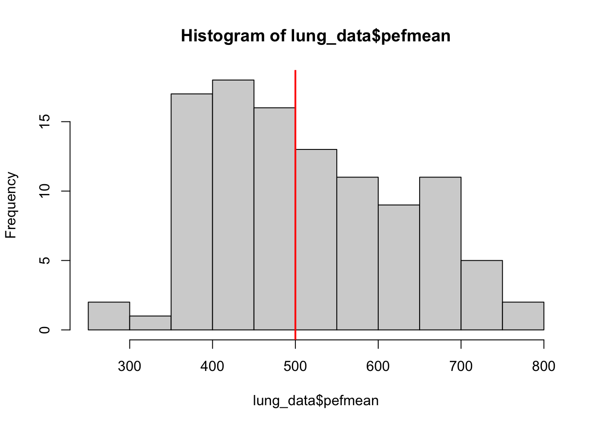

lung_data <- haven::read_dta('data/PEFH98-english.dta')
# recode gender: female, male
lung_data$gender <- factor(lung_data$gender,
levels = c('1','2'),
labels = c('female','male'))
# head(lung_data)
# examine variable pefmean
# visualise the distribution
hist(lung_data$pefmean)
abline(v = 500, col = 'red', lwd = 2)